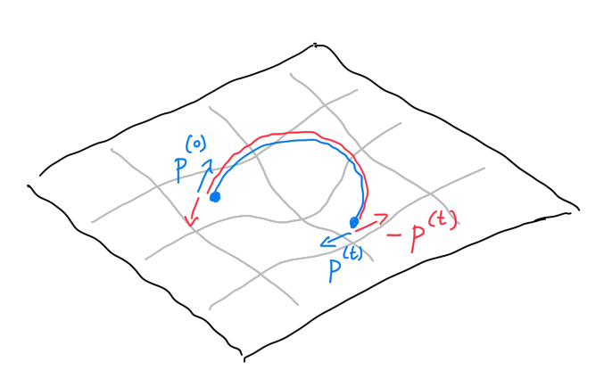

Start with an exact description of the ball’s motion (in continuous time).
Discretize time carefully to be able to compute trajectory while maintaining the involution property.
Inspiration from physics
Physics gives us precise expression for quantifying the notion of “rolling a ball”.
As often, it is easier to describe how things change rather than how thing are,
i.e. to provide an ordinary differential equation (ODE).
ODE for the continuous time evolution of frictionless ball’s position and momentum \((x^{(t)}, p^{(t)})\): \[\begin{align*}
x' = \frac{\mathrm{d}x^{(t)}}{\mathrm{d}t} &= p \;\;\text{(in a small time interval the change in position is equal to the momentum)} \\
p' = \frac{\mathrm{d}p^{(t)}}{\mathrm{d}t} &= - \nabla U(x) \;\;\text{(the velocity decreases proportionally to the steepness of the landscape)}.
\end{align*}\]
Recall: the gradient \(\nabla U(x) = (\partial U/\partial x_1, \dots, \partial U/\partial x_d)\) is a vector pointing towards the direction of steepest ascent.
Flip trick
At the very end of the trajectory, in the analysis we flip the momentum: \[T_\text{flip}(x, p) = (x, -p).\]

This will allow us to prove the involution property:
Let the steepness of the landscape at current position update the momentum a bit.
Discretization of \(p' = - \nabla U\): \[T_\text{kick}(x, p) = \left(x, p + \frac{\epsilon}{2} \nabla \log \pi(x)\right).\]
# example: a normal# This function return gradient_x of log pi(x)gradient =function(x) {-2*x # = - 0.5 x^2 / sigma^2, i.e. a normal with variance sigma^2 = 0.5}epsilon =0.1kick =function(s) { x = s[[1]] p = s[[2]]c(x, p + epsilon *gradient(x) /2)}flip =function(s) { x = s[[1]] p = s[[2]]c(x, -p)}initial =c(1.1, 2.3) # flip o kick o flip o kick# where 'o' denotes 'function composition',# which recall are read right to leftnewpoint =kick(initial) flipped =flip(newpoint)traceback =kick(flipped)fipped_again =flip(traceback)initial
[1] 1.1 2.3
newpoint
[1] 1.10 2.19
flipped
[1] 1.10 -2.19
traceback
[1] 1.1 -2.3
fipped_again
[1] 1.1 2.3
Ah! Ah! we come back where we started!
I.e., the code above illustrates that \(T_\text{flip}\circ T_\text{kick}\circ T_\text{flip}\circ T_\text{kick}= I\), which is easy to show and a building block for showing that the full proposal is an involution. (And a great way to check correctness of involution-based MH algorithms!)
We have the same property for drifts:
drift =function(s) { x = s[[1]] p = s[[2]]c(x + epsilon * p, p)}initial =c(1.1, 2.3) # flip o kick o flip o kicknewpoint =drift(initial) flipped =flip(newpoint)traceback =drift(flipped)fipped_again =flip(traceback)initial
[1] 1.1 2.3
newpoint
[1] 1.33 2.30
flipped
[1] 1.33 -2.30
traceback
[1] 1.1 -2.3
fipped_again
[1] 1.1 2.3
Leap frog:
Alternate between kick and drift.
Do so in a palindromic fashion to obtain involution after flip. \[T_\text{leap-frog}= T_\text{kick}\circ T_\text{drift}\circ T_\text{kick}.\]
L =5hmc_proposal =function(s) {for (i in1:L) { s =kick(s) s =drift(s) s =kick(s) }flip(s)}newpoint =hmc_proposal(initial) apply_twice =hmc_proposal(newpoint)initial
[1] 1.1 2.3
newpoint
[1] 1.8957642 -0.7389151
apply_twice
[1] 1.1 2.3
Proposition:\(T = T_\text{flip}\circ T_\text{leap-frog}^L\) is an involution, where \(T^n = T^{n-1} \circ T\).
Proof idea: use the property \(T_\text{flip}\circ T_\text{kick}\circ T_\text{flip}\circ T_\text{kick}= I\) we encountered (and similar one for the drift) and the fact that \(T_\text{leap-frog}^l\) is a palindrome (can be read both ways, like “madam” or “nurses run”).
Proposition:\(T = T_\text{flip}\circ T_\text{leap-frog}^L\) has Jacobian one.
Proof idea: show that each constituent has Jacobian determinant one, so the product of these is also one.
Putting it all together
Recall the high-level organization of HMC is the deterministic alternation of:
a complicated kernel \(K_\text{hmc}\): “rolling the ball”,